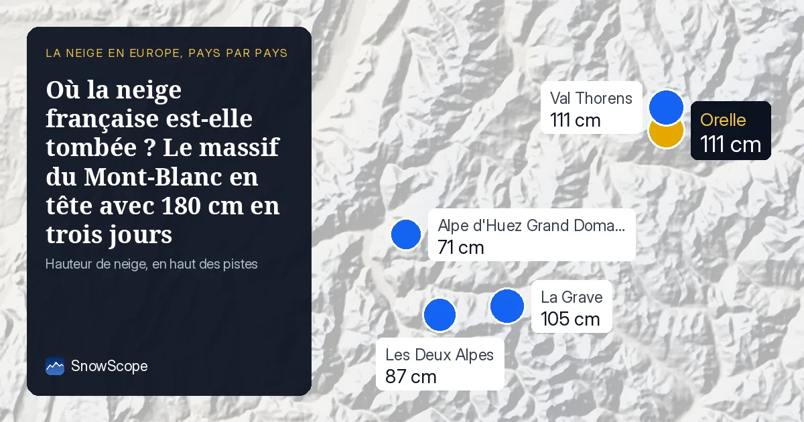
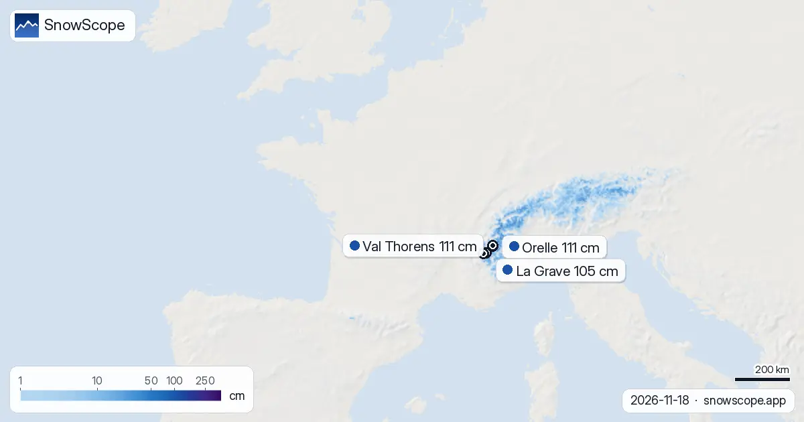

Où la neige française est-elle tombée ? Le massif du Mont-Blanc en tête avec 180 cm en trois jours
Au cours des trois derniers jours, la neige est tombée sur les Alpes françaises selon un schéma clair : les plus hautes chaînes en ont reçu le plus. Le massif du Mont-Blanc au nord-est a reçu 180 cm, tandis que les Alpes du Sud en ont reçu moins de la moitié.
Consultez les prévisions neige en temps réel pour Orelle sur l'application SnowScopeHauteurs de neige, alertes poudreuse et carte 3D, gratuitement.
Le schéma de neige : l'altitude et la localisation comptent
Quand je regarde où la neige fraîche est tombée, la géographie raconte l'histoire. Le massif du Mont-Blanc, qui s'étend entre la France et l'Italie et contient les plus hauts sommets d'Europe, a reçu les chutes les plus fortes : 180 cm en trois jours. Les Alpes du Nord français viennent ensuite avec 101 cm, et les Alpes du Sud français en ont reçu 85 cm. Ce n'est pas du hasard. Ces montagnes font face aux systèmes météorologiques dominants différemment, et l'altitude agit comme un filtre : plus d'altitude, plus de neige.
Sur toutes les hautes montagnes que nous modélisons, seulement environ 9 pour cent du domaine skiable français a un manteau neigeux aujourd'hui. Mais au-dessus de 2 500 m, cela change complètement : 93 pour cent du terrain est blanc, et la profondeur moyenne est de 34 cm. Au-dessous de 2 000 m, la neige est fine ou absente. La limite de neige se situe à 1 900 m, donc si vous prévoyez de skier, vous devez aller en altitude.
| Station | Hauteur de neige | Neige fraîche, 72 h | Attendu, jours suivants | Sommet |
|---|---|---|---|---|
| Orelle | 111 cm | 86 cm | 110 cm | 3 221 m |
| Val Thorens | 111 cm | 86 cm | 110 cm | 3 221 m |
| La Grave | 105 cm | 77 cm | 104 cm | 3 543 m |
| Les Deux Alpes | 87 cm | 59 cm | 77 cm | 3 511 m |
| Alpe d'Huez Grand Domaine | 71 cm | 59 cm | 91 cm | 3 306 m |

Ce qui est tombé dans les 24 et 72 dernières heures
Hier seulement, l'endroit le plus arrosé de France a reçu 23 cm. Sur trois jours, le maximum a atteint 54 cm sur une vaste zone des hautes Alpes. C'est une véritable accumulation, pas une poussière de neige. Environ 7 770 kilomètres carrés—la taille d'une grande région—ont reçu au moins 5 cm de neige fraîche en ces trois jours. C'est à peu près 87 pour cent du terrain où les skieurs peuvent trouver de la neige.
Le manteau neigeux s'est étendu de 3 010 kilomètres carrés en une semaine, un très bon début de saison. Hier, il a augmenté de 80 kilomètres carrés à lui seul. Ces chiffres peuvent sembler abstraits, mais ils signifient que les lacunes du début de saison se comblent. Les pentes rocheuses et les zones minces deviennent skiables, du moins aux altitudes plus élevées.

Les stations qui dominent maintenant
Trois stations se distinguent aujourd'hui : Orelle, Val Thorens et La Grave. Orelle et Val Thorens affichent toutes les deux une profondeur de 111 cm et ont reçu 86 cm en trois jours. La Grave conserve 105 cm à son point de mesure, avec 77 cm de neige fraîche. Les trois se situent bien au-dessus de 3 000 m à leurs sommets, ce qui explique leur profondeur. Les Deux Alpes traîne à 87 cm, et l'Alpe d'Huez Grand Domaine à 71 cm, toutes deux plus au sud et plus basses.
Comparé aux hivers précédents, Orelle fonctionne à 93 pour cent de sa profondeur habituelle à la mi-novembre. Val Thorens est bien en avant à 215 pour cent de la normale—elle a commencé la saison tôt et a accumulé la neige rapidement. La Grave se situe à 91 pour cent. Ce sont des chiffres solides pour novembre, mais souvenez-vous : la neige du début de saison est fine et les rochers se cachent dessous. Les pentes en haute altitude sont plus sûres que les pentes plus basses.
Ensuite : le jour le plus neigeux est le 25 novembre
Plus de neige arrive. Dans les trois prochains jours (jusqu'au 21 novembre), notre modèle prévoit jusqu'à 76 cm dans les zones les plus arrosées, principalement dans les hautes chaînes. Les perspectives s'élargissent sur sept jours : le maximum pourrait atteindre 150 cm, concentré dans le massif du Mont-Blanc et les Alpes du Nord à nouveau. Le 25 novembre, le jour le plus neigeux de la semaine à venir devrait produire 44 cm dans la zone la plus forte.
La première neige aux altitudes plus basses est prévue pour demain, 19 novembre. Cela devrait abaisser la limite de neige et élargir la zone skiable. D'ici la fin de la semaine prochaine, début décembre, la deuxième semaine apporte moins de neige mais une accumulation régulière. La trajectoire de la tempête qui alimente les Alpes ne disparaîtra pas rapidement.
Pourquoi le schéma se maintient : moussons et orographie
Le massif du Mont-Blanc attrape plus de neige parce qu'il s'élève en premier et le plus haut à mesure que l'air humide voyage à l'intérieur en provenance de la Méditerranée et de l'Atlantique. Les Alpes du Nord en bénéficient ensuite. Les Alpes du Sud, bien que hautes, se situent dans une ombre pluviométrique relative par rapport à ce flux. C'est une ascension orographique classique : l'air monte, refroidit et dépose son humidité sur le côté au vent. Les endroits les plus secs sont souvent juste en aval, à quelques vallées.
Ce même schéma façonne la saison année après année. Le début d'hiver dans les Alpes françaises favorise souvent le nord et le centre par rapport au sud. Si vous cherchez des pentes vierges et de la flexibilité, le massif du Mont-Blanc et les stations du nord sont votre cible maintenant. Le sud rattrapera son retard plus tard en décembre et janvier.
Le tableau d'ensemble : un très bon début
Le terrain skiable en haute altitude de la France est 93 pour cent blanc au-dessus de 2 500 m. C'est inhabituel pour la mi-novembre et signale une saison précoce saine. Plus de 108 des 223 stations de ski françaises ont maintenant une neige mesurable. L'expansion depuis il y a 7 jours (5 550 kilomètres carrés de manteau neigeux) jusqu'à aujourd'hui (8 560) représente un véritable progrès. Dans une semaine, cette empreinte pourrait augmenter davantage.
Consultez le bulletin officiel d'avalanche avant de partir hors-piste, en particulier sur les pentes raides exposées au nord où la neige fraîche est la plus profonde. Utilisez notre application SnowScope pour suivre où la neige est la plus épaisse et où les prochaines tempêtes vont tomber. Les montagnes réagissent rapidement ce novembre.
Conseils aux skieurs
- Skiez au-dessus de 2 500 m où la couverture de neige est 93 pour cent fiable. Au-dessous de 2 000 m, attendez-vous à une neige fine et des rochers exposés.
- Le massif du Mont-Blanc et les Alpes du Nord ont la neige fraîche la plus profonde. Si vous avez un jour pour skier, allez-y en premier ; les stations du sud rattraperont leur retard lors des prochaines tempêtes.
- La neige du début de saison est légère et peut cacher des dangers. Vérifiez le bulletin officiel d'avalanche avant de skier hors-piste, et évitez les pentes raides où la neige fraîche est la plus épaisse jusqu'à ce qu'elle se tasse.
- Orelle, Val Thorens et La Grave dominent en profondeur et en neige fraîche. Elles offrent les meilleures conditions et la plus grande confiance pour une journée complète de ski.
- Plus de neige arrive le 19 novembre et atteint son pic le 25 novembre. D'ici là, les altitudes plus basses auront une meilleure couverture et davantage de terrain ouvrira.
À propos de ces chiffres
Les hauteurs de neige des stations sont la neige la plus épaisse sur le haut du domaine, d'après le modèle de neige SnowScope (environ 1 km, calcul du 18 novembre) ; ce sont des estimations pour une zone, pas une mesure en un point. Les valeurs des stations de mesure sont mesurées à la date indiquée. Les prévisions peuvent changer. Consultez toujours le bulletin d'avalanche officiel avant le hors-piste.
Citer ce bulletin
Pour la recherche, l'enseignement ou la presse : chiffres et graphiques réutilisables librement sous CC BY 4.0 avec cette citation.
SnowScope (2026), Où la neige française est-elle tombée ? Le massif du Mont-Blanc en tête avec 180 cm en trois jours, https://snowscope.app/blog/fr/2026/11/france-where-the-snow-fell-18-november-2026.html, consulté le 2026-11-18
SnowScope (Atlas Labs). (2026, November 18). Où la neige française est-elle tombée ? Le massif du Mont-Blanc en tête avec 180 cm en trois jours. SnowScope snow reports. https://snowscope.app/blog/fr/2026/11/france-where-the-snow-fell-18-november-2026.html
BibTeX
@misc{snowscope2026francewherethesnowfell18,
author = {{SnowScope (Atlas Labs)}},
title = {Où la neige française est-elle tombée ? Le massif du Mont-Blanc en tête avec 180 cm en trois jours},
year = {2026},
month = nov,
howpublished = {\url{https://snowscope.app/blog/fr/2026/11/france-where-the-snow-fell-18-november-2026.html}},
note = {Published 2026-11-18 11:51 UTC; accessed 2026-11-18}
}· CC BY 4.0 · Méthodes, données et outils →
Orelle : neige et température selon l'altitude, cet hiver vs l'hiver dernier (outils) →
Suivre Orelle
Gratuit : un message quand la neige arrive, et la météo chaque matin.
Autres bulletins neige

Orelle a atteint 31 cm le 16 novembre, en hausse de 17 cm en une semaine. Les Alpes devraient recevoir jusqu'à 103 cm de neige supplémentaire d'ici le 19 novembre.

La Grave domine les Alpes avec 52 cm prévus en 24 heures au 11 novembre ; la neige précoce arrive des semaines avant l'accumulation maximale.

De 20 EUR pour un week-end d'ouverture à des forfaits de 6 jours avant Noël : un calendrier des meilleurs bons plans de début de saison dans les Alpes pour 2026, avec la neige à laquelle s'attendre.